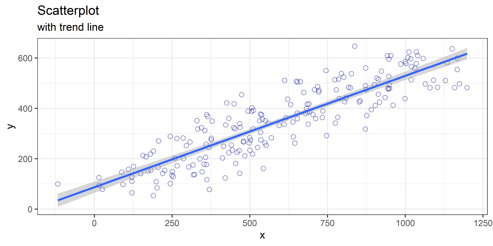

4 Scatterplots
# create a random(ish), correlated dataset
scatter_data <-
tibble(x = seq(100, 1100, 5),
y = seq(100, 600, 2.5)) %>%
mutate(x = rnorm(201, x, 100),
y = rnorm(201, y, 50))
# scatterplot
# ggplot is the first command for any ggplot2 plot. data and aestetics aes()
# can be defined here or in any individual geom_*(function)
ggplot(data = scatter_data, aes(x = x, y = y)) +
# scatterplots can be created using the geom_point shape
geom_point(shape = 1, ## ggplot has 20 built in shapes called by integer
size = 2,
color = "darkblue",
alpha = 0.5) + ## alpha sets transparency 1 = solid, 0 = invisible
# trendlines can be added to the plot with geom_smooth. By default this will
# give you a loess (nonparametric fit) with error bars but this can be changed
# here we use "lm" or "linear model" to fit a line
geom_smooth(method = "lm") +
# themes change the overall look of the plot. these can also be modified
# further if need be (also can use packaged themes like theme_economist)
theme_bw() +
# title the plot, can also have a subtitle
ggtitle(label = "Scatterplot",
subtitle = "with trend line")## `geom_smooth()` using formula 'y ~ x'

Figure 4.1: Scatterplot of psuedorandom correlated variables